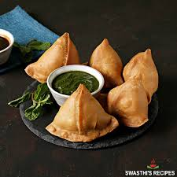

Samosa

Samosa is a popular Indian snack that features a crispy, golden pastry filled with spiced potatoes, peas, and sometimes meat. It's deep-fried to perfection, offering a satisfying crunch with every bite. Typically served with chutneys, samosas are enjoyed across South Asia and have become a favorite street food around the world.
Home
Ingredients
- All-purpose flour (maida)
- Boiled potatoes
- Green peas
- Green chili
- Ginger
- Spices (cumin, garam masala, coriander powder, etc.)
- Salt
- Oil
- Water
Steps
- Prepare dough with maida, salt, oil, and water; rest for 30 mins.
- Boil and mash potatoes, then sauté with peas, chili, and spices.
- Divide dough into balls and roll into thin oval shapes.
- Cut each oval in half and form a cone shape with one half.
- Fill the cone with potato mixture and seal the edges with water.
- Heat oil in a pan over medium heat.
- Deep-fry samosas until golden and crispy.
- Drain on paper towels to remove excess oil.
- Serve hot with tamarind or mint chutney.